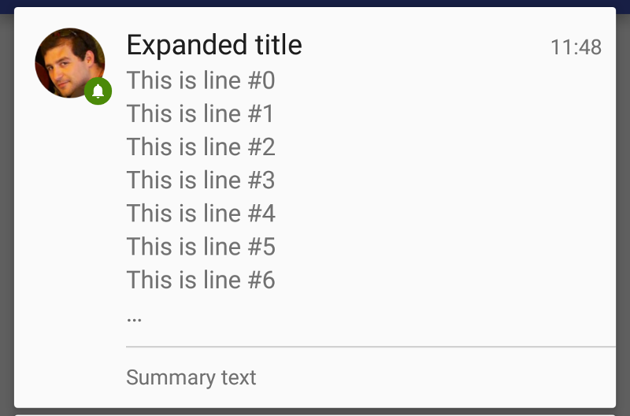

Android Inbox Style Notification:-
Inbox Style allows a notification made of several independent lines of short text.
This style accepts up to 7 lines. Any number above the notification will ellipsize further lines by adding a "...".

Steps of Creating Inbox Style Notification:-
1. Retrieve an instance of NotificationCompat.Builder.
NotificationCompat.Builder builder = new NotificationCompat.Builder(context);
2. Apply the style by creating a new NotificationCompat.InboxStyle instance.
NotificationCompat.InboxStyle style = new NotificationCompat.InboxStyle(builder);
3. Add as many lines as you wish.
style.addLine("This is line 1" );
style.addLine("This is line 2" );
4. Add a different title if you want by using setBigContentTitle.
style.setBigContentTitle("Expanded title");
5. Optionally add a summary to the notification.
style.setSummaryText("Summary text");
6. Build a Notification using the NotificationCompat.Builder
Notification notification = builder
.setContentTitle("Title")
.setContentText("This is a notification!")
.setSmallIcon(R.drawable.ic_notifications_white_small)
.build();
7. Pass along the Notification object via notify method from NotificationManagerCompat and assign an ID of your choice.
NotificationManagerCompat notificationManager = NotificationManagerCompat.from(context);
notificationManager.notify(0x1234, notification);
Note:-
Title, text and small icon are mandatory so that the notification can be displayed.